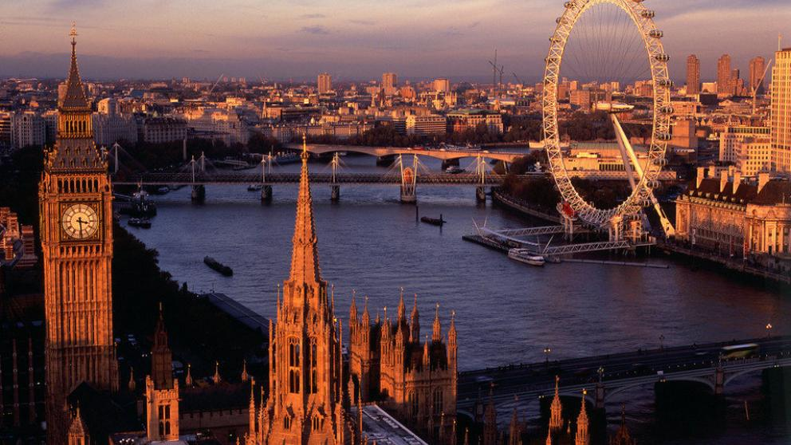

- BALI, INDONESIA

Bali es el nombre tanto de una isla como el de una provincia de Indonesia. La provincia incluye la isla de Bali, Nusa Penida, Nusa Lembongan y Nusa Ceningan. Está localizada en la parte más occidental de las islas menores de la Sonda, junto con Java al oeste y Lombok al este. La isla es un popular destino turístico y es conocida, al igual que Java, por sus delicadas artes, que incluyen danza, escultura, pintura, orfebrería, peletería y un particular estilo musical, especialmente el interpretado durante el gamelan. Aparte de ser un destino turístico, es un punto de encuentro de mayoristas; moda, joyería, calzado, muebles o decoración de todo el mundo, que compran en la isla para exportar después a sus países de origen. Bali junto con Yakarta, la capital de Indonesia, ha sido sede del concurso Miss Mundo 2013.Bali es parte de las Islas menores de la Sonda. Tiene apenas 140 km de longitud este-oeste y 90 km de norte a sur, y una superficie de 5636 km².1? Está situada aproximadamente a ocho grados al sur de la línea del Ecuador. Al oeste el estrecho de Bali, de 2,4 a 3,2 km de ancho, la separa de Java. Al este el profundo estrecho de Lombok, de entre 18 y 40 km de ancho, la separa de la isla de Lombok; tiene adyacentes las pequeñas islas de Nusa Penida, Nusa Lembongan y Nusa Ceningan, separadas de Bali por el estrecho de Badung. El estrecho de Lombok coincide con el paso de la línea de Wallace que separa la ecozona Indomalaya de la ecozona Australasia. La isla se compone de una cadena montañosa que se extiende de este a oeste. El punto más alto de la isla es el monte Agung con 3142 m de altura, un volcán en actividad, que entró en erupción por última vez en marzo de 1963.La isla de Bali, en Indonesia, es la número uno. ¿Por qué será? Es posible que sean las playas de arena blanca como Lovina Beach, el verde intenso de sus selvas en el Parque Nacional de Bali Occidental, los antiguos templos (más de 10.000) o los diferentes senderos para hacer excursionismo. Alquila una moto para moverte por la isla: no dejes de ir al templo Tanah Lot para ver atardecer, piérdete por los arrozales de Jatiluwih o en Tegalalang, escoge playa o lago, visita algún volcán o, incluso, aprovecha para casarte ¡Bali es la isla de los dioses!
- LONDRES, INGLATERRA
Londres es una ciudad global, uno de los centros neurálgicos en el ámbito de las artes, el comercio, la educación, el entretenimiento, la moda, las finanzas, los medios de comunicación, la investigación, el turismo o el transporte. Es el principal centro financiero del mundo y una de las áreas metropolitanas con mayor PIB. Londres es también una capital cultural mundial, la ciudad más visitada considerando el número de visitas internacionales y tiene el mayor sistema aeroportuario del mundo según el tráfico de pasajeros. Asimismo, las 43 universidades de la ciudad conforman la mayor concentración de centros de estudios superiores de toda Europa. En el año 2012 Londres se convirtió en la única ciudad en albergar la celebración de tres Juegos Olímpicos de Verano.En esta ciudad multirracial convive gente de un gran número de culturas que hablan más de trescientos idiomas distintos. La Autoridad del Gran Londres estima que en 2015 la ciudad tiene 8,63 millones de habitantes, que supone el 12,5 % del total de habitantes del Reino Unido. El área urbana del Gran Londres, con 10 470 000 habitantes, es la segunda más grande de Europa, pero su área metropolitana, con una población estimada de entre 12 y 14 millones, es la mayor del continente. Desde 1831 a 1925 Londres, como capital del Imperio británico, fue la ciudad más poblada del mundo.Aunque circulen por la izquierda y midan las distancias en millas y yardas, Londres es la más popular de las ciudades del mundo. Historia y carácter, monumentos que son verdaderos iconos como el Big Ben o los mismísimos taxis tradicionales son ingredientes para una escapada perfecta. Hay de todo para todos: el arte de la Tate Modern, las tendencias de moda de más rabiosa actualidad por sus calles, los mercadillos como el de Camden, los diferentes parques por donde caminar. Sube a la London Eye, Londres solo se puede abarcar desde las alturas.